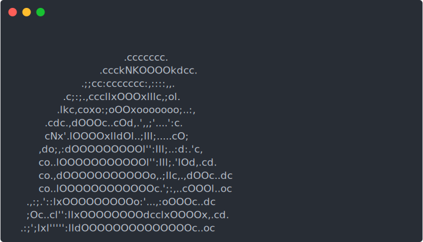

![]()
I’m a bit of a software hoarder. I’m always coming across new tools, libraries, and frameworks for automating tasks or creating cool new things, and I always forget to take note of whatever I come across, so this post is the start of (hopefully) many in a series of me doing double-duty to show off all the interesting bits of software I come across1 (from things as small as bash scripts to things as large as full-blown software toolkits like ffmpeg) and make a formal record of all of them for my own notekeeping (because I have starred so many repositories on GitHub and I can hardly remember2 what a fraction of them are even about).
1 Including how to set things up and use them, which is something that I have to learn from scratch every time I go to set up my software workflows on yet another device and so it’s something that I want to make note (and while I’m doing that, I might as well share it with everybody else)
2 What the average terminal session looks like for me when I’m trying to run some old tool I haven’t used for a while:
3 I’m trying to take blogging seriously right now (for the record, I’ve tried at least twice before and failed to stick with it), and for me that means going all out in making my blog posts multimodal and interesting (which is why I care about these terminal recordings).
I usually come across these tools whenever I’m browsing GitHub to find some working piece of software or code to resolve some pain point of mine (or to automate tasks because I’m lazy), and seeing as that I’m trying to figure out how to include GIFs of code running in terminals on blog posts recently3, terminal session recorders are a good place to start.
Terminal Session Recorders
Use asciinema for recording terminal sessions to local .cast files, replaying .cast files in a terminals, & for uploading .cast files to asciinema.org (or your own server).
- Recordings uploaded to asciinema.org can be embedded as dynamic
asciinemarecording iframes in HTML webpages (like those you see throughout this post!) - On Windows, use
PowerSession-rs(a drop-in replacement fork ofasciinema) - Use
aggto convertasciinemarecordings (.castor web URL) to GIFs - Use
svg-term-clito convertasciinemarecordings (.castor web URL) to animated SVGs
What are terminal session recorders?
Terminal session recorders, like asciinema4, are CLI tools that can record (and playback recordings of) standard input/output in terminal sessions. What makes them different from just using screen recording software is that terminal session recorders run inside a terminal5 and store the actual raw text from terminal sessions as a stream of events using a custom file format6, which means that:
4 Despite being constantly reminded my eyes that it’s spelled “as-ciinema”, I just can’t pronouncing it in my head as “ascii-cinema” 😅
5 Instead of as a window display capture service running as a GUI program.
6 asciicast for asciinema
- Recordings take up much less space compared to video files
- You can actually copy the raw text being displayed when playing back recordings7 in the terminal or on the web; and
- You can actually customize how terminal sessions look during playback by editing the recorded files or just by changing your playback settings (which means you don’t have to re-record sessions for small modifications like changing font styles)
asciinema recording embedded on the web looks like. Shown: “Iterative git rebase with vim”. Source: https://asciinema.org/a/9593
Why I care about terminal session recorders
That’s all very promising, but there’s two very specific reasons as to why I’m interested in terminal session recorders (and if you’re a software developer, you might be too):
I want to be able to show snippets of terminal sessions in blog posts on my website without slowing down pages by loading several videos8
I want to be able to easily create GIFs/animated SVGs for READMEs for my projects on GitHub9
8 Of which virtually all are expected to range from tens of seconds to a minute or two in length
9 One project that I’d really like to spruce up is eagerDB, which I currently just have a rather boring single image for in its README.
asciinema is not enough
More on that second point above, converting recordings from asciicast to GIF/SVG is one area where asciinema is lacking (it only supports its proprietary file format), which is where middleware like agg and svg-term-cli come in (and I’ll be taking about both at length later on).
But before we dive into those asciinema-derivatives, let’s take a quick look at what exactly asciinema has to offer (as well as how we can use it to record and playback terminal sessions).
asciinema
Installation
You can install asciinema using PyPI via pip or using your package repository of choice10 on Linux, macOS, and FreeBSD11.
10 You can find the full list at docs.asciinema.org/manual/cli/installation
11 As you might’ve noticed, Windows is not listed. There’s a good reason for that, and we’ll get to it when we talk about PowerSession-rs.
> pip install asciinemaUsage
Once you’ve got it installed, there are 3 main commands:
| Command | Description |
|---|---|
> asciinema rec |
Record a terminal session to a local asciicast file |
> asciinema play |
Play a recording (local file or web URL) in the current terminal |
> asciinema upload12 |
Upload a recording to asciinema.org or a self-hosted asciinema server |
12 There’s also > asciinema auth for connecting asciinema on your local CLI to your asciinema.org account so you can upload recordings to your account (you can also upload anonymously without having to use the auth command, but anonymous uploads that aren’t linked to an account within 7 days of their upload date are automatically deleted).
> asciinema rec [filename]
Start up a recording session using > asciinema rec [filename]13 and asciinema will launch a new shell14 in your terminal and start recording standard output. In addition, there are a load of different options15 you can configure for recordings, some of the more useful of which include:
13 You can also omit [filename] and just run asciinema rec; after ending the recording, you’ll receive a prompt in the terminal to save the recording locally, upload to asciinema.org, or discard (which will also delete the temporary file used to store the recording).
14 Q: What’s the difference between a Terminal and a Shell? A: a shell is a command-line interpreter that processes commands, whereas a terminal is a program (or even a hardware device) that provides a user interface for running a shell.
15 See the asciinema docs for more options.
| Argument | Description |
|---|---|
--stdin |
Record standard input (standard output is recorded by default) |
--append |
Append to an existing recording |
-c, --command=<command> |
Record output for a single command only16 or specific shell (instead of the default using the $SHELL environment variable) |
-i, --idle-time-limit=<sec> |
Limit recorded terminal inactivity to some max <sec> seconds |
16 Instead of an interactive shell where you can type in any number of commands and the recording only stops once you enter exit or press CTRL+d
> asciinema play <filename/url>
Replay a terminal session recorded using asciinema rec (at a local file or url) in the current terminal using asciinema play. You can pause/resume playback by pressing space, or end playback by pressing CTRL+c. Similar to rec, you also have some options for:
| Argument | Description |
|---|---|
-i, --idle-time-limit=<sec> |
Limit replayed terminal inactivity to some max <sec> seconds |
-s, --speed=<factor> |
Set playback speed |
-l, --loop |
Loop playback |
-m, --pause-on-markers |
Automatically pause playback on markers17 |
17 Markers are like breakpoints or video chapters in YouTube that allow to mark specific timestamps in recordings for navigation; you can configure the asciinema recorder to have a keyboard shortcut for adding markers during recording or edit an existing recording and insert marker lines as specified in the documentation for asciinema markers. On the web, markers are shown in the video timeline (similar to video chapters in YouTube), and can make jumping to points of interest in a terminal session a lot easier.
> asciinema upload <filename>
This command uploads a local recording to whatever URL is specified in the ASCIINEMA_API_URL environment variable (asciinema.org by default18).
18 Under whatever account has been authenticated via > asciinema auth or anonymously if you haven’t run that yet.
asciinema on the web
You can view your and others’ uploaded recordings on asciinema.org19. More importantly, you can embed uploaded recordings as iframes in HTML pages using some inline JavaScript as below:
19 And there are some quite cool recordings on there, from a demo of a mapping CLI to iterative git rebasing with vim.
<script src="https://asciinema.org/a/646222.js" id="asciicast-646222" async></script>asciinema recording.
While the look and feel of the embedded player defaults to the original uploader’s settings, you can override settings yourself using the following modifications to the inline script:
<script>
src="https://asciinema.org/a/646222.js"
id="..."
data-start-at="00:40"
data-autoplay="true"
data-loop="true"
data-speed="2.75"
data-idle-time-limit="2"
data-theme="solarized-light"
data-poster="npt:1:23" <!-- player preview frame timestamp -->
data-cols="65" <!-- terminal width -->
data-rows="20" <!-- terminal height -->
data-preload="true"
async>
</script>asciinema recording with additional configuration & zoomed in.
Where asciinema falls flat
Problem 1: Windows
The asciinema website and GitHub repository do an exceedingly poor job of telling you this from the get-go20, but asciinema does not work on Windows!
20 I actually installed asciinema on my Windows-based laptop via pip with no issues, only to run into errors when trying to record via asciinema rec, and then when I googled the errors I came across the GitHub issues mentioning that the program isn’t even designed to run on Windows.
21 At the time of writing PowerSession-rs does not yet support (playing recordings from a URL)[https://github.com/Watfaq/PowerSession-rs/issues/22] or the idle time limit option from asciinema play, among other features.
22 One slight however: it only supports PowerShell.
Thankfully, a port of asciinema for Windows exists in the form of PowerSession-rs, and it has the most21 of the same commands so it can be used as a drop-in replacement for asciinema on Windows (which is an absolute blessing22 for people chained to Windows like myself).
Problem 2: GitHub
GitHub READMEs don’t render <script> tags, which means that while you can technically include an image23 that links to a recording on asciinema.org like the below, it will only play the recording after navigating to an external page, which means you can’t get a cool README where there’s an autoplaying video of the code like at github.com/tqdm/tqdm.
23 You can get an SVG of the default preview frame for the asciinema recording by appending .svg to the recording’s URL (e.g. https://asciinema.org/a/bJMOlPe5F4mFLY0Rl6fiJSOp3.svg for https://asciinema.org/a/bJMOlPe5F4mFLY0Rl6fiJSOp3)
GitHub does, however, allow for embedding GIFs and animated SVGs, which is where agg comes in.
agg
agg is a CLI tool24 for generating GIF files from asciinema recordings25, written by the same developer as asciinema. It’s built using Rust, so you will need to have Cargo installed to be able install it (Cargo is distributed by default with Rust).
24 A successor to the now-deprecated asciicast2gif
25 Stored using the asiicast-v2 file format.

asciinema recording using aggUsage
> agg <asciicast_filename/url> <output_gif_filename>
You can use agg for rendering GIFs from a local asciicast .cast recording or from URL like the below:
> agg input.cast output.gif> agg https://asciinema.org/a/569727 output.gifThere are also a large number of adidtional options available to customize the look of the generated GIF26, including setting:
26 See the full list of options at github.com/asciinema/agg#usage.
| Argument | Description |
|---|---|
--font-family <FONT_FAMILY> |
Specify font family [default: “JetBrains Mono, Fira Code, SF Mono, Menlo, Consolas, DejaVu Sans Mono, Liberation Mono”] |
--font-size <FONT_SIZE> |
Specify font size (in pixels) [default: 14] |
--idle-time-limit <IDLE_TIME_LIMIT> |
Limit idle time to max number of seconds [default: 5] |
--line-height <LINE_HEIGHT> |
Specify line height [default: 1.4] |
--speed <SPEED> |
Adjust playback speed [default: 1] |
--theme <THEME> |
Select color theme [possible values: asciinema, dracula, monokai, solarized-dark, solarized-light, custom] |
Where agg falls flat
The trouble with agg however is that the GIF encoder27 it uses generates very high quality files at the cost also very high file sizes (which is fine for a handful of GIFs on a GitHub README but can potentially be a strain on resources if displayed on, say, a webpage).
To remedy that, we can use svg-term-cli, which is designed for rendering asiicast recordings to animated SVGs.
svg-term-cli
Why use animated SVGs over GIFs
For one, animated SVGs are able to look a lot more crisp at larger resolutions than GIFs by using vector images instead of pixel based animation. Adding on to that (and why you should be using animated SVGs instead of GIFs when embedding recordings on websites), this also allows animated SVGs to have a much smaller file size, which is a very nice combination of features, making svg-term-cli almost28 the ideal tool for rendering your asciinema recordings29.
28 To find out why it’s almost ideal (instead of just being ideal), continue reading to the “Where svg-term-cli falls flat” section.
29 Notable exception: you can’t rewind or copy text from recordings, making this more of a cosmetic option.

asciinema recording using svg-term-cli.Usage
After installing svg-term-cli via > npm install -g svg-term-cli30, you can render a local asciicast file or a recording at a URL to an animated SVG using the following:
30 Yes, this is in fact a Node.js application.
> svg-term --cast <filename/url> --out [filename]> svg-term
svg-term-cli, too, has optional arguments for customizing the rendered SVG’s appearance; some standout options that aren’t present in either of the previous tools include:
| Argument | Description |
|---|---|
--no-cursor [boolean] |
Disabling cursor rendering |
--padding [number] |
Setting distance between text and image bounds |
--window [boolean] |
Rendering with MacOS window decorations |
Where svg-term-cli falls flat
Unfortunately, it’s been 5 years and counting since the last commit31 made to the svg-term-cli project, so while it still works at the time of writing, we’re probably not going to be able to expect any of the 25 open issues to be closed anytime soon (at least not until someone forks the repo and resuming maintainance for the project).
31 And that wasn’t even anything meaningful to the codebase, just some edits to documentation, the last real commit actually modifying some code was 7 years ago in 2018.
32 Unlike PowerSession-rs however, termsvg does not support uploading recordings to asciinema.org
33 Might be worth doing a comparison of SVG generations (wrt file size, speed, etc.) between termsvg and svg-term-cli for a future blog post.
If you’re looking for a more up-to-date alternative, then there’s the Go-based termsvg, which is a functional but still early-stage CLI tool that’s able to record terminal sessions (just like asciinema32) and export them to SVG33.

asciinema recording using termsvg. Looks just as good (if not better) than one generated by svg-term-cli.What to explore next
While I’ve covered the most important tools in the terminal session recording realm in this post, there’s still a fair few number of programs out there that record and store recordings in lots of different ways.
The most notable feature that I’ve relegated to a future post is the concept of programmatic terminal session recording generation (that is, writing code to programmatically create recordings of terminal sessions) via tools like vhs which have oodles of options for fine-tuning exactly how you want recordings to look.
But that’s a software showcase for another day.
Reuse
Citation
@online{hossain2024,
author = {Hossain, Sadman},
title = {**Software {Showcase} \#1: {Recording} Terminal Sessions
Using `Asciinema` and Its Derivatives**},
date = {2024-05-27},
url = {https://sadman.ca/posts/2024-05-27-software-showcase-01-asciinema},
langid = {en}
}